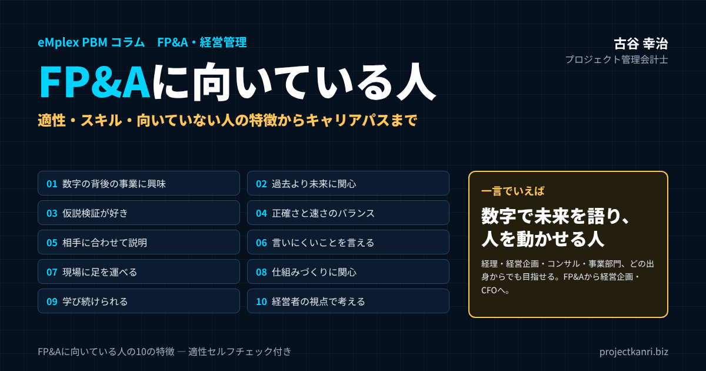

FP&Aに向いている人とは？適性・必要なスキル・向いていない人の特徴から、キャリアパスとプロジェクト型ビジネスのFP&Aまで

結論：FP&Aに向いているのは「数字で未来を語り、人を動かせる人」です
この記事の要点
- FP&Aとは：計画・実績・見通し・分析で、経営の意思決定を日々支える仕事
- 向いている人：数字で未来を語り、人を動かせる人。事業への興味、未来志向、仮説検証、誠実さ
- 必要なスキル：会計・データ・事業理解・コミュニケーション（後から身につけられる）
- 出身別：経理・経営企画・コンサル・事業部門それぞれに強みと補うべき課題
- キャリア：FP&Aから経営企画・事業責任者・CFOへ
プロジェクト管理会計士の古谷です。最近、FP&Aという仕事に関心を持つ方から、「自分はFP&Aに向いているのでしょうか」という相談をいただくことが増えてきました。経理の経験を生かしてキャリアの幅を広げたい方、経営企画から一歩踏み込みたい方、事業部門から数字の世界に移りたい方。立場はさまざまですが、共通しているのは、FP&Aという仕事の実像がつかみにくく、自分に合っているのかが判断できないという悩みです。
結論から申し上げます。FP&Aに向いているのは、数字で未来を語り、人を動かせる人です。数字を正確に扱えることは前提にすぎません。過去の数字を集計するだけでなく、そこから事業の動きを読み取り、これから何が起こるのかを見通し、その見通しを経営者や現場の責任者に伝えて、判断と行動を変える。この一連の流れを担えることが、FP&Aの適性の核心です。
私は、エンプレックス（現SCSK）でCFOを務めていた頃、FP&Aの機能を担うメンバーと一緒に、プロジェクトごとの予算と着地見込みを経営の判断につなげる仕組みをつくってきました。ホリプロでは経営企画の立場で、事業の計画と数字を結び付ける仕事に携わりました。そして独立後、200社を超える企業の経営管理を支援する中で、FP&Aとして力を発揮する人と、苦労する人の違いを、数多く見てきました。
本稿では、その経験をもとに、FP&Aに向いている人の特徴を、具体的な行動のレベルで整理します。あわせて、必要なスキル、向いていない人の特徴、出身別の強みと課題、自分の適性を確かめるためのチェック、キャリアパス、そして企業がFP&A人材を育てる方法までをお伝えします。プロジェクト型ビジネスのFP&Aに求められる、少し特殊な適性についても触れます。
FP&Aとは：経理・経営企画との違い
最初に、FP&Aとはどのような仕事なのかを確認しておきます。FP&Aは、ファイナンシャル・プランニング・アンド・アナリシスの略で、日本語では財務計画と分析と訳されます。予算や中期計画をつくり、実績と比べて差異を分析し、着地の見込みを更新し、経営者や事業の責任者の意思決定を数字で支える仕事です。
FP&Aと混同されやすいのが、経理と経営企画です。三つの仕事は重なる部分もありますが、時間の向きと、数字を使う目的が異なります。
| 項目 | 経理 | FP&A | 経営企画 |
|---|---|---|---|
| 時間の向き | 過去 | 過去〜未来（今期・来期） | 未来（中長期） |
| 中心の仕事 | 記帳・決算 | 予算・実績分析・着地見込み | 戦略・中期計画・新規事業 |
| 求められるもの | 正確さ・期限の遵守 | 分析・見通し・意思決定の支援 | 構想力・全社の視点 |
| 主な相手 | 監査法人・税務 | 経営者・事業の責任者 | 経営者・取締役会 |
※会社によって役割の分担は異なります。
経理は、過去の取引を正確に記録し、決算を締めることが中心の仕事です。正確さと期限の遵守が何より求められます。経営企画は、中長期の戦略や計画を描くことが中心で、組織や新規事業などの非財務の領域も扱います。FP&Aは、その間に位置し、計画を数字に落とし込み、実績と比べ、未来の着地を見通しながら、事業の意思決定を日々支えます。
日本の会社では、FP&Aという名前の部署がない場合も多く、経理や経営企画の担当者が、その機能の一部を担っていることが少なくありません。大切なのは、名前ではなく機能です。計画、実績、見通し、分析、そして意思決定の支援。この機能を担う人が、FP&Aの仕事をしているのです。
FP&Aの仕事の価値は、数字をつくることではなく、数字を使って経営の判断を変えることにあります。どれほど精緻な予算や分析をつくっても、それが経営の判断に使われなければ、FP&Aの仕事は成果を上げたとは言えません。この点を理解しておくことが、FP&Aの適性を考える出発点になります。
FP&Aという言葉は新しく聞こえるかもしれませんが、その機能は、昔から優れた会社の中に存在していました。経営者の傍らで数字を読み、先を見通し、判断を支える番頭のような存在です。FP&Aは、その役割を、仕組みと専門性として確立したものだと言えるでしょう。
FP&Aの1か月：どんな仕事をしているのか
FP&Aの適性を考えるうえで、実際の仕事の流れを知っておくことは大切です。会社によって違いはありますが、典型的なFP&Aの1か月は、次のような流れで進みます。
| 時期 | 主な仕事 |
|---|---|
| 月初 | 速報の収集、実績の確定を待つ |
| 月初〜第1週 | 予算・前年との差異分析、事業の責任者への確認 |
| 第2週 | 見通しの更新、通期の着地見込み |
| 中旬 | 経営会議の資料作成と報告、議論の支援 |
| 後半 | 事業部門の相談対応、施策・投資の採算試算、次の計画の準備 |
月の初めは、前月の実績の確定を待ちながら、速報の数字を集めます。実績が確定したら、予算や前年と比べて差異を分析し、その理由を事業の責任者に確認します。次に、今後の見通しを更新し、通期の着地見込みを出します。そして、分析と見通しを経営会議の資料にまとめ、経営者に報告し、議論を支えます。月の後半は、事業部門からの相談への対応、新しい施策や投資の採算の試算、次の予算や計画の準備などに時間を使います。
この流れを見ると、FP&Aの仕事は、数字を扱う時間と、人と話す時間が、ほぼ半々であることが分かります。数字の分析だけをしていればよい仕事ではなく、事業の責任者に理由を聞き、経営者に説明し、相談に乗る。人との対話が、仕事の大きな部分を占めているのです。この点が、FP&Aに向いている人と向いていない人を分ける、大きなポイントになります。
FP&Aのやりがい：数字で経営が動く瞬間
FP&Aの仕事のやりがいは、自分の分析と提言によって、経営の判断が変わる瞬間にあります。
たとえば、ある事業の着地見込みが悪化していることにいち早く気づき、その原因を突き止め、経営会議で打ち手を提案する。その提案が採用され、数か月後に着地が改善する。あるいは、新しい投資の採算を試算し、楽観的すぎる前提を指摘して、計画を現実的なものに修正する。自分の仕事が、会社の進む方向に直接影響を与えていると実感できることは、FP&Aならではの喜びです。
もう一つのやりがいは、会社の全体が見えることです。どの事業が利益を生み、どの事業が苦戦しているのか。どの顧客との取引が会社を支えているのか。FP&Aは、会社のあらゆる数字に触れる立場にあり、経営者と同じ景色を見ることができます。若いうちからこの景色を見られることは、キャリアにとって大きな財産になります。
そして、人から頼られることです。事業の責任者から「この施策の採算を一緒に考えてほしい」と相談される。経営者から「この数字の意味を教えてほしい」と聞かれる。数字を通じて組織の中で頼られる存在になることは、FP&Aの仕事を続ける大きな原動力になります。
私自身、CFOとして経営会議に臨む中で、FP&Aの担当者が用意してくれた着地見込みの分析によって、早めに手を打てた場面が何度もありました。自分の分析が経営の判断を変えたと実感できた経験は、担当者にとって、何よりの成長のきっかけになります。
FP&Aの大変さ：「きつい」と感じやすい場面と乗り越え方
一方で、FP&Aには大変な面もあります。向いているかどうかを考えるうえでは、この点も知っておくことが大切です。
一つ目は、締めの時期の忙しさです。月初の実績の確定から経営会議までの期間は短く、その間に分析と見通しの更新と資料の作成を終わらせなければなりません。予算の策定の時期には、さらに業務が集中します。
二つ目は、板挟みの立場です。経営者は高い目標を求め、事業の責任者は現実的な数字を主張します。FP&Aは、その間に立って、根拠のある数字に落とし込む役割を担います。どちらからも不満を向けられることがあり、精神的な負担を感じることもあります。
三つ目は、不確かさとの付き合いです。着地見込みは、外れることがあります。外れたときに、なぜ外れたのかを問われることもあります。見通しは予言ではなく、その時点での最善の判断であることを、自分自身も周囲も理解しておく必要があります。
これらの大変さを乗り越えるうえで役に立つのは、仕組みと関係です。データの集計を仕組みで自動化すれば、締めの時期の負担は大きく減ります。日頃から事業の責任者と信頼関係を築いておけば、板挟みの場面でも、率直に話し合うことができます。見通しの前提条件を明示しておけば、外れたときにも、どの前提が変わったのかを冷静に説明できます。
| 大変さ | 乗り越え方 |
|---|---|
| 締めの時期の忙しさ | データの集計を仕組みで自動化し、分析に時間を回す |
| 経営と現場の板挟み | 日頃から事業の責任者と信頼関係を築き、根拠で話す |
| 見通しが外れる不安 | 前提条件を明示し、外れたときは前提の変化で説明する |
大変さがあるからこそ、それを乗り越えたときの成長も大きくなります。締めの時期の緊張感の中で、限られた時間で結論を出す経験を重ねることで、判断の速さと確かさは確実に磨かれていきます。
FP&Aに向いている人の10の特徴
では、FP&Aに向いている人には、どのような特徴があるのでしょうか。私がこれまで一緒に働き、また支援先で見てきた、FP&Aとして力を発揮している人に共通する特徴を、十に整理しました。
| 特徴 | 具体的な行動 |
|---|---|
| ① 数字の背後の事業に興味がある | 差異の金額だけでなく、どの顧客・案件で何が起きたかを知りたくなる |
| ② 過去より未来に関心がある | 着地はどうなるかを考えることに面白さを感じる |
| ③ 仮説検証が好き | 原因の仮説を立て、データと対話で確かめる |
| ④ 正確さと速さのバランス | 判断に間に合う精度で、期限内に出す |
| ⑤ 相手に合わせて説明できる | 経営・現場・経理で伝え方を変える |
| ⑥ 言いにくいことを言える | 厳しい見通しを、敬意を持って伝える |
| ⑦ 現場に足を運べる | 責任者と話し、仕事の実態を知る |
| ⑧ 仕組みづくりに関心がある | 手作業を自動化し、分析の時間をつくる |
| ⑨ 学び続けられる | 会計・事業・業界・道具を学び続ける |
| ⑩ 経営者の視点で考えられる | 経営者の判断に役立つ情報を先回りして用意する |
一つ目は、数字の背後にある事業の動きに興味を持てることです。売上が予算を下回ったとき、その数字を報告するだけで終わらず、どの顧客の、どの案件で、何が起きたのかを知りたいと思える人。数字そのものよりも、数字が表している事業の現実に関心を持てることが、FP&Aの出発点です。
二つ目は、過去よりも未来に関心があることです。決算の数字を正確に締めることに達成感を覚える人は、経理に向いています。一方、これから何が起こるのか、着地はどうなりそうかを考えることに面白さを感じる人は、FP&Aに向いています。
三つ目は、仮説を立てて検証することが好きなことです。差異の理由は、最初から分かっているわけではありません。「おそらくこの案件の遅れが原因だろう」と仮説を立て、データと事業の責任者への確認で検証し、違っていれば別の仮説を立てる。この繰り返しを楽しめる人は、FP&Aで伸びていきます。
四つ目は、正確さと速さのバランスを取れることです。経営の判断には、期限があります。完璧な分析を一週間後に出すよりも、八割の確からしさの見通しを今日出す方が、価値がある場面も少なくありません。一方で、数字の誤りは信頼を一瞬で失わせます。どこまでの正確さが必要かを判断し、必要な速さで出せる人が、FP&Aに向いています。
五つ目は、相手に合わせて数字を説明できることです。経営者には結論と判断の選択肢を、事業の責任者には現場の言葉で原因と打ち手を、経理には会計の言葉で根拠を。同じ数字でも、相手によって伝え方を変えられることが大切です。
六つ目は、言いにくいことを言えることです。予算の達成が難しい見通しを経営者に伝える。事業の責任者の楽観的な見込みに、根拠を問う。FP&Aは、組織の中で、数字に基づいて耳の痛いことを言う役割を担います。その役割から逃げない誠実さと、相手への敬意を両立できる人が、信頼されるFP&Aになります。
七つ目は、現場に足を運べることです。数字は、オフィスの画面の中だけにあるわけではありません。事業の現場に出向き、責任者と話し、仕事の実態を知る。その手間を惜しまない人の分析は、現場の納得を得られます。
八つ目は、仕組みをつくることに関心があることです。毎月同じ集計を手作業で繰り返すのではなく、データの流れを整え、レポートを自動化し、分析に時間を使えるようにする。仕組みを改善することに喜びを感じる人は、FP&Aの仕事の質を高めていきます。
九つ目は、学び続けられることです。FP&Aには、会計、事業、業界、そしてデータを扱う道具の知識が求められます。事業や道具は変わり続けるため、学び続ける姿勢が欠かせません。
そして十番目は、経営者の視点で考えられることです。自分の担当の数字だけでなく、会社全体の成果にとって何が大切かを考える。経営者が何に悩み、何を判断しようとしているのかを想像し、その判断に役立つ情報を先回りして用意する。この視点を持てる人は、やがて経営の中枢を担う存在になっていきます。
これらの特徴は、すべてが揃っていなければならないわけではありません。私がこれまで出会った優れたFP&Aの担当者も、それぞれに得意な特徴と、そうでない特徴を持っていました。大切なのは、いくつかの特徴で強みを持ち、足りない特徴を自覚して、チームの中で補い合うことです。
特に、一つ目の「数字の背後の事業に興味がある」という特徴は、他のすべての特徴の土台になります。事業への興味があれば、仮説を立てたくなり、現場に足を運びたくなり、相手に伝わる言葉を探したくなる。私がFP&Aの採用や登用で最も重視してきたのも、この特徴でした。
FP&Aに必要なスキル：会計・データ・事業理解・コミュニケーション
特徴と並んで、FP&Aに必要なスキルも整理しておきます。スキルは、特徴と違って、後から身につけることができます。今は足りなくても、意識して伸ばしていけば十分です。
| スキル | 内容 | 身につけ方の例 |
|---|---|---|
| 会計 | 財務三表のつながり、計上のルール、原価計算 | 簿記、決算業務の経験、管理会計の学習 |
| データ | 表計算・関数・ピボット、BIツール、データ抽出 | 日々の分析で使う、BIツールでレポートを作る |
| 事業理解 | 顧客・収益構造・業界・競合 | 現場への同行、事業部の会議への参加 |
| コミュニケーション | 資料作成、説明、情報の引き出し、提言 | 経営会議での説明、事業の責任者との対話 |
会計の知識は、FP&Aの土台です。損益計算書、貸借対照表、キャッシュ・フロー計算書のつながりを理解し、売上や原価の計上のルールを知っていることが必要です。簿記の資格は、その入口として役に立ちます。ただし、FP&Aで求められるのは、仕訳を正しく切る力よりも、数字のつながりを理解し、事業の動きが財務諸表にどう表れるかを読み解く力です。
データを扱う力も欠かせません。表計算ソフトで集計し、関数を使いこなし、ピボットテーブルで多角的に分析する。さらに、BIツールでレポートを作り、データベースから必要なデータを取り出せれば、仕事の幅は大きく広がります。最近では、AIを使った分析や資料作成の補助も、FP&Aの仕事に入り込みつつあります。
事業を理解する力は、経験の中で身につくものです。自社が誰に何を売り、どのように利益を生んでいるのか。業界の構造はどうなっているのか。競合はどう動いているのか。事業を理解していなければ、数字の意味を読み解くことはできません。
そして、コミュニケーションの力です。数字を分かりやすく伝える資料の作成、会議での説明、事業の責任者からの情報の引き出し、経営者への提言。FP&Aの成果は、最終的には、人に伝わり、人を動かして初めて生まれます。
四つのスキルのうち、どれから伸ばすべきかは、出身によって異なります。経理出身の人はコミュニケーションと事業理解を、事業部門出身の人は会計とデータを、意識して伸ばしてください。足りないスキルを補うことで、自分の強みがより生きるようになります。
FP&Aに役立つ資格と学び方
FP&Aになるために必須の資格はありません。資格よりも、実務の経験と、本稿で挙げた特徴の方が大切です。それでも、知識を体系的に身につけるうえで、資格の学習は役に立ちます。
| 資格 | 学べること | 向いている人 |
|---|---|---|
| 日商簿記（2級・1級） | 財務会計の基礎、工業簿記・原価計算 | 会計の基礎を固めたい人、事業部門出身の人 |
| 米国公認会計士（USCPA） | 会計・監査・税務・ビジネス環境（英語） | 外資系企業やグローバル企業のFP&Aを目指す人 |
| 公認会計士 | 会計・監査の高度な専門知識 | 会計の専門性を軸にキャリアを築きたい人 |
| 証券アナリスト | 財務分析、企業価値評価、投資 | 投資の採算や企業価値の分析に関わりたい人 |
※資格は必須ではありません。実務経験と組み合わせて活かすことが大切です。
会計の基礎を固めるなら、日商簿記がよい入口になります。特に二級では、工業簿記として原価計算の基礎も学べるため、管理会計に関心のある方にお勧めです。より深く会計を学びたい方は、米国公認会計士や公認会計士などの資格があります。財務の分析や企業価値の評価を学びたい方には、証券アナリストの資格も選択肢になります。FP&Aの実務に近い内容を学べる資格や講座も、近年は増えてきています。
ただし、資格の学習だけでは、FP&Aの力は身につきません。学んだ知識を、自社の数字に当てはめてみることが大切です。損益計算書の構造を学んだら、自社の損益計算書を読み解いてみる。原価計算を学んだら、自社のプロジェクトの原価がどう計算されているのかを確かめてみる。知識と実務を往復させることで、FP&Aの力は着実に伸びていきます。
FP&Aに向いていない人の特徴：ミスマッチが起きやすいケース
一方で、FP&Aの仕事に就いて苦労する人もいます。向いていないと決めつけるためではなく、自分に当てはまる点があれば、意識して補うための参考として、ミスマッチが起きやすい特徴を挙げておきます。
| 特徴 | 起きやすいこと | 補い方 |
|---|---|---|
| 正解がないと落ち着かない | 見通しを出せない | 前提条件を明示し、幅を持った見通しを出す |
| 人と関わりたくない | 原因の確認ができない | 定例の対話の場を仕組みにする |
| 正確さにこだわりすぎる | 判断に間に合わない | 必要な精度を先に決める |
| 報告で止まる | 経営の判断が変わらない | 原因と打ち手まで書く習慣をつける |
| 評論家になる | 現場の信頼を失う | 一緒に解決策を考える姿勢を持つ |
一つ目は、正解が一つに決まっていないと落ち着かない人です。決算の数字には正解がありますが、着地の見込みや計画には正解がありません。不確かな中で、もっともらしい見通しを立てることに強いストレスを感じる人は、FP&Aの仕事に苦しむかもしれません。
二つ目は、人と関わることを避けたい人です。先に述べたとおり、FP&Aの仕事の半分は人との対話です。データの分析だけに集中したい人は、データ分析の専門職の方が向いている場合があります。
三つ目は、数字の正確さだけにこだわりすぎる人です。正確さは大切ですが、経営の判断に間に合わなければ、どれほど正確な分析も価値を失います。細部の正確さにこだわるあまり、全体の結論が出せない人は、苦労することがあります。
四つ目は、数字を報告することで仕事が終わったと考える人です。差異の金額を正しく報告しても、その理由と打ち手まで踏み込まなければ、経営の判断は変わりません。報告で止まる人は、FP&Aとしての価値を発揮しにくくなります。
五つ目は、現場や経営者に対して、評論家の立場をとってしまう人です。「この事業部は予算を守れていない」と指摘するだけで、一緒に解決策を考えない。数字を武器に相手を責める姿勢では、現場の信頼を得られず、必要な情報も集まらなくなります。
これらに当てはまる点があっても、悲観する必要はありません。多くは、経験と意識によって変えられるものです。大切なのは、自分の傾向を知り、それを補う働き方を身につけることです。
また、向いていない特徴があると感じた方にお伝えしたいのは、FP&Aのチームには多様な人が必要だということです。データの分析に深く集中できる人、仕組みを丁寧に整えられる人、人と話して情報を集めるのが得意な人。一人ですべてを担うのではなく、チームとして補い合えば、それぞれの特徴は強みとして生きてきます。
出身別に見るFP&Aの強みと課題：経理・経営企画・コンサル・事業部門
FP&Aになる人の出身は、さまざまです。どの出身にも、強みと、意識して補うべき課題があります。自分の出身の強みを生かし、課題を補うことが、FP&Aとして早く力を発揮するための近道です。
| 出身 | 強み | 意識して補うこと |
|---|---|---|
| 経理 | 会計の知識、数字の正確さ | 未来の見通し、事業の責任者との対話 |
| 経営企画 | 全社の視点、経営者との対話 | 会計の仕組み、月次の数字の積み上げ |
| コンサルティング | 仮説思考、資料作成、論理的な説明 | 仕組みを着実に回し続けること、社内の信頼関係 |
| 事業部門 | 事業の現場の深い理解 | 会計とデータの基礎 |
経理出身の人は、会計の知識と数字の正確さという大きな強みを持っています。一方で、過去の数字を正確に締めることに慣れているため、不確かな未来の見通しを立てることや、事業の責任者と対話して原因を探ることに、最初は戸惑うことがあります。意識して現場に出向き、事業の言葉を学ぶことが、成長の鍵になります。
経営企画出身の人は、全社の視点と、経営者と対話する経験を持っています。一方で、会計の細かな仕組みや、月次の数字の積み上げに弱い場合があります。会計の基礎を固め、数字の根拠を正確に説明できるようにすることで、提言の説得力が増します。
コンサルティング会社出身の人は、仮説思考と資料の作成、論理的な説明に優れています。一方で、短期間のプロジェクトで成果を出すことに慣れているため、毎月同じ仕組みを着実に回し続けることや、社内の人間関係の中で長く信頼を築くことに、意識的に取り組む必要があります。
事業部門出身の人は、事業の現場を深く理解しているという、他の出身者にはない強みを持っています。数字の背後にある事業の動きが、肌感覚で分かります。一方で、会計やデータの扱いには、学びが必要なことが多いでしょう。事業の理解を武器に、会計とデータの基礎を身につければ、現場から最も信頼されるFP&Aになり得ます。
私自身は、建設会社で社会に出て、現場の数字に触れることから始まり、CFOとして全社の財務を担い、経営企画として事業の計画にも携わりました。振り返ると、現場の感覚、会計の知識、経営の視点の三つを、異なる場所で少しずつ身につけてきたことが、FP&Aの仕事の土台になっていると感じています。どの出身であっても、足りないものを意識して補っていけば、FP&Aとして成長することができます。
会社の規模・ステージによって変わるFP&Aの適性
FP&Aに向いている人の条件は、会社の規模や成長の段階によっても少しずつ変わります。同じFP&Aという仕事でも、スタートアップと大企業では、求められる動き方が大きく異なるからです。
| ステージ | 主な仕事 | 向いている人 |
|---|---|---|
| スタートアップ | 資金繰りの見通し、投資家向け事業計画、資金配分 | ゼロから仕組みをつくれる人、変化に柔軟な人 |
| 上場準備 | 予実管理の整備、月次決算の早期化、審査に耐える計画 | 仕組みを設計し定着させられる人 |
| 大企業 | 事業部担当、全社の数字の統合、多くの関係者との調整 | 専門性を磨き、着実に成果を上げられる人 |
創業から間もないスタートアップでは、FP&Aの専任者は一人か、経営者や管理部門の責任者が兼ねていることがほとんどです。ここでは、資金繰りの見通し、投資家への説明のための事業計画、限られた資金の配分の判断など、幅広い仕事を一人でこなす必要があります。仕組みがないところから自分でつくることを楽しめる人、変化の速さに柔軟に対応できる人が向いています。
上場を準備している段階の会社では、予算と実績の管理の仕組みを整え、月次の決算を早め、上場の審査に耐える経営計画を作ることが求められます。仕組みを設計し、それを社内に定着させる力が重要になります。審査や監査の対応で、外部の専門家と対話する機会も増えます。
規模の大きな会社では、FP&Aは専門のチームとして組織され、役割が細かく分かれています。特定の事業部の担当として深く事業を理解する力や、全社の数字を統合する力、多くの関係者と調整する力が求められます。決められた仕組みの中で、着実に成果を上げることが大切です。
自分がどの段階の会社のFP&Aに向いているのかを考えることも、キャリアを選ぶうえで大切な視点です。
外資系企業のFP&Aと日系企業のFP&A
FP&Aという言葉は、もともと欧米の企業で広く使われてきたものです。外資系企業では、FP&Aは確立された職種であり、事業部ごとにFP&Aの担当者が置かれ、本社への報告と、事業の責任者の意思決定の支援を担うのが一般的です。
外資系企業のFP&Aでは、英語での報告やコミュニケーションが求められることが多く、本社が定めた報告の形式や期限に従って、正確かつ迅速に数字を出す力が重視されます。予算と見通しの更新の頻度も高く、四半期ごと、場合によっては毎月、通期の見通しを更新します。
一方、日系企業では、FP&Aという名前の部署がないことも多く、経営企画や経理の中に、その機能が分散していることが少なくありません。そのため、職種の境界が曖昧で、FP&Aの担当者が、予算の管理から、経営会議の運営、新規事業の採算の検討まで、幅広い仕事を担うことがあります。役割が決まっていない分、自ら仕事の範囲を広げ、経営に近づいていける面白さがあります。
どちらが優れているということではありません。決められた枠組みの中で専門性を磨きたい人は外資系企業のFP&Aに、幅広い仕事を通じて経営に近づきたい人は日系企業のFP&Aに、それぞれ向いているかもしれません。
どちらの環境でも共通して求められるのは、数字で未来を語り、人を動かす力です。環境の違いは、その力の発揮の仕方の違いにすぎません。
FP&Aの適性セルフチェック：12の問い
自分がFP&Aに向いているかどうかを確かめるために、次の十二の問いに答えてみてください。「はい」が多いほど、FP&Aの仕事を楽しめる可能性が高いと言えます。
| No. | 問い |
|---|---|
| 1 | 数字の差異を見ると、その理由を知りたくなる |
| 2 | 過去の結果より、これからどうなるかを考える方が面白い |
| 3 | 仮説を立てて、データで確かめることが好きだ |
| 4 | 8割の確からしさで判断することに抵抗がない |
| 5 | 同じ内容を、相手に合わせて言い換えるのが得意だ |
| 6 | 必要なら、上司や経営者にも言いにくいことを伝えられる |
| 7 | 現場に出向いて話を聞くことが苦にならない |
| 8 | 繰り返しの作業を、仕組みで楽にしたくなる |
| 9 | 新しい道具や知識を学ぶことが好きだ |
| 10 | 自分の担当以外の数字にも関心がある |
| 11 | 人前で数字を説明し、質問に答えることができる |
| 12 | 会社全体の成果にとって何が大切かを考えることがある |
※「はい」が8つ以上：高い適性／5〜7つ：適性あり、伸ばす点あり／4つ以下：伸ばすべき点が明確
「はい」が八つ以上であれば、FP&Aの仕事に高い適性があると考えてよいでしょう。五つから七つであれば、適性はあるものの、意識して伸ばすべき点があります。四つ以下であっても、FP&Aを諦める必要はありません。「いいえ」と答えた項目が、これから伸ばすべき点を教えてくれています。特に、後から身につけられるスキルに関する項目であれば、学ぶことで十分に補えます。
このチェックは、あくまで一つの目安です。実際には、FP&Aの仕事を経験してみて初めて、自分に合っているかどうかが分かることも多いものです。今の職場で、予算の作成や差異の分析、着地見込みの更新といった仕事に、少しずつ関わってみることをお勧めします。
チェックの結果を、上司や同僚に見せて、意見を聞いてみるのもよいでしょう。自分では「いいえ」と思っていた項目が、周囲からは強みとして見えていることもあります。自分の適性は、自分よりも周囲の方がよく見えている場合が少なくありません。
新任のFP&Aがつまずきやすいポイント
FP&Aの仕事に就いたばかりの人が、つまずきやすいポイントがあります。あらかじめ知っておけば、避けることができます。
一つ目は、分析を細かくしすぎることです。すべての差異を説明しようとして、膨大な資料をつくってしまう。しかし、経営者が知りたいのは、影響の大きい差異とその原因、そして打ち手です。影響の大きい上位の項目に絞って深く掘ることを意識してください。
二つ目は、数字だけで結論を出してしまうことです。データを見て原因を推測し、事業の責任者に確認しないまま報告してしまう。すると、現場の実態と違う結論になり、信頼を失います。数字から仮説を立てたら、必ず現場に確認する習慣をつけてください。
三つ目は、結論を最後に書くことです。分析の過程を順に説明し、最後に結論を述べる資料は、忙しい経営者には読まれません。結論を最初に、その理由と根拠を後に。この順番を守るだけで、資料の伝わり方は大きく変わります。
四つ目は、一人で抱え込むことです。分からないことがあっても、自分で調べようとして時間を使いすぎる。事業の責任者や経理の担当者に聞けば、すぐに分かることも多いものです。FP&Aは人と関わる仕事です。早めに聞き、早めに相談することが、結果として仕事の質と速さを高めます。
伸びるFP&Aに共通する3つの習慣
私がこれまで一緒に働き、また支援先で見てきたFP&Aの担当者の中で、短い期間で大きく成長した人には、共通する習慣がありました。
一つ目は、毎月の数字を、自分なりの予想と比べる習慣です。実績が確定する前に、今月の売上や利益がどうなるかを自分で予想しておき、実績と比べる。予想が外れたら、なぜ外れたのかを考える。この繰り返しによって、事業の動きを読む感覚が、驚くほど速く磨かれていきます。
二つ目は、分からないことをその日のうちに聞く習慣です。数字の動きで分からないことがあれば、その日のうちに事業の責任者や経理の担当者に聞く。小さな疑問を放置しないことで、事業の理解が着実に深まり、同時に社内の人間関係も築かれていきます。
三つ目は、自分の分析が経営の判断にどう使われたかを確かめる習慣です。経営会議に出した資料が、どのような議論を生み、どのような判断につながったのか。使われなかったとすれば、なぜなのか。自分の仕事の成果を、経営の判断という外側から確かめることで、FP&Aとして本当に価値のある仕事が何かが分かってきます。
プロジェクト型ビジネスのFP&Aに求められる適性
ここで、私が専門とするプロジェクト型ビジネスのFP&Aについて触れておきます。システム開発、コンサルティング、建設、広告や映像の制作といったプロジェクト型ビジネスでは、FP&Aに、一般的な適性に加えて、いくつかの特有の適性が求められます。
第一に、プロジェクトという単位で数字を見る力です。会社全体の数字は、一つひとつのプロジェクトの数字の合計です。プロジェクトごとの予算、実績、着地見込みを理解し、それを積み上げて会社全体の見通しを描く。全体の数字と、個別のプロジェクトの数字を、行き来しながら考えられることが求められます。
第二に、人の時間を数字として扱う感覚です。プロジェクト型ビジネスの原価の大部分は、社員の人件費、つまり人の時間です。工数、コストレート、稼働率といった、人の時間に関する数字を理解し、それがプロジェクトの採算にどう影響するかを読み解く力が必要です。
第三に、プロジェクトマネージャーと対話する力です。プロジェクトの着地見込みは、プロジェクトマネージャーの見通しから生まれます。現場の楽観的な見通しに根拠を問い、実績のデータと照らし合わせ、より確かな見込みに近づけていく。プロジェクトマネージャーと対等に、しかし敬意を持って議論できることが、プロジェクト型ビジネスのFP&Aの要です。
| 適性 | 具体的な仕事 |
|---|---|
| プロジェクト単位で数字を見る | プロジェクト別の予算・実績・着地見込みを積み上げて全社の見通しを描く |
| 人の時間を数字として扱う | 工数・コストレート・稼働率から採算を読み解く |
| PMと対話する | 現場の見通しに根拠を問い、実績と照らして確かな見込みにする |
以前のコラムで、大手のコンサルティングファームが、プロジェクトごとの収支を管理する専門の部署を置いていることをご紹介しました。プロジェクトに最も近い立場で、財務の視点から現場を支える仕事です。プロジェクト型ビジネスのFP&Aは、まさにその役割を担います。人の時間とプロジェクトの数字に興味を持てる人にとって、非常にやりがいのある仕事です。
プロジェクト型ビジネスのFP&Aは、会社の数字と現場の仕事が、最も近い距離でつながっている仕事でもあります。自分の分析が、あるプロジェクトの体制の見直しや、追加の請求の交渉につながり、そのプロジェクトの採算が改善していく様子を、間近で見ることができます。数字が現場を動かす手応えを、最も直接的に感じられるFP&Aだと言えるでしょう。
FP&Aのキャリアパス：経営企画、事業責任者、そしてCFOへ
FP&Aは、キャリアの面でも魅力の大きい仕事です。数字を通じて事業の全体を理解し、経営者の判断を間近で支える経験は、その後のキャリアの幅を大きく広げます。
| 段階 | 役割 |
|---|---|
| FP&A担当者 | 事業部・プロジェクトの予算、差異分析、着地見込み |
| FP&Aマネージャー | 全社の予算・見通しの仕組みの設計、経営への提言 |
| 経営企画の責任者 | 中長期の計画と、数字による経営の舵取り |
| CFO | FP&A・経理・財務・資金調達・IR・内部統制の統括 |
| 事業の責任者 | 数字で事業を語れるリーダーとして事業を率いる |
FP&Aの担当者として経験を積んだ後は、FP&Aのチームを率いる管理職へ進む道があります。予算と見通しの仕組みを全社で設計し、複数の事業の数字を統合して経営に提言する役割です。
そこから、経営企画の責任者、あるいはCFOへと進む道があります。CFOは、FP&Aの機能に加えて、経理、財務、資金調達、投資家との対話、内部統制などを統括する役割です。FP&Aで培った、数字で未来を語り、経営の判断を支える力は、CFOの仕事の中核になります。
また、FP&Aから事業の責任者に転じる人もいます。数字を通じて事業を深く理解した経験は、事業を率いる立場になったときに、大きな武器になります。自分の事業の数字を、自分の言葉で語れる事業責任者は、経営からの信頼も厚くなります。
私自身のキャリアを振り返っても、数字を通じて事業を見る経験が、CFOとしての仕事、経営企画としての仕事、そして独立後の支援の仕事のすべてにつながっています。FP&Aは、経営の中心に近づくための、最も確かな入口の一つだと考えています。
どの道に進むとしても、FP&Aで身につけた、数字で事業を理解し、未来を見通し、人を動かす力は、あらゆる経営の仕事の土台になります。だからこそ、キャリアの早い段階でFP&Aを経験することには、大きな価値があるのです。
AI時代にFP&Aに向いている人：機械に任せる仕事と、人が担う仕事
AIの活用が広がり、FP&Aの仕事も変わり始めています。データの集計や、定型的な差異の分析、資料の下書きといった作業の多くは、AIや自動化の仕組みが担えるようになりつつあります。
では、AIの時代に、FP&Aに向いている人の条件は変わるのでしょうか。私は、むしろ本稿で挙げた特徴の重要性が、ますます高まると考えています。AIは、データから傾向を示すことは得意ですが、その数字がなぜ動いたのかを、事業の現場に出向いて確かめることはできません。経営者の悩みを汲み取り、言いにくいことを敬意を持って伝え、人を動かすことも、人にしかできない仕事です。
AIの時代のFP&Aに向いているのは、AIを道具として使いこなし、作業の時間を減らし、その分を、事業の理解と、人との対話と、経営への提言に振り向けられる人です。集計の作業に自分の価値を置くのではなく、判断を支えることに価値を置ける人。そうした人にとって、AIは仕事を奪うものではなく、本来の仕事に集中させてくれる、心強い味方になるはずです。
具体的には、AIに集計や下書きを任せた分の時間で、事業の責任者との対話を一つ増やす、現場に一度多く足を運ぶ、経営者への提言を一つ深める。そうした使い方ができる人が、これからのFP&Aで大きな価値を生んでいくはずです。逆に、集計や資料の作成の速さだけを強みにしてきた人は、自分の価値をどこに置くのかを、今のうちに考え直しておく必要があるでしょう。
FP&Aへの転職・異動で伝えたいこと
FP&Aへの転職や社内の異動を考えている方に向けて、自分の適性をどう伝えればよいかにも触れておきます。
大切なのは、スキルの一覧を並べることよりも、数字を使って誰かの判断や行動を変えた経験を、具体的に語ることです。経理の担当者であれば、決算の数字の中から異常な動きに気づき、事業部に確認して原因を突き止めた経験。事業部門の担当者であれば、自分の担当の数字を分析して、営業の打ち手を変えた経験。こうした経験は、規模が小さくても、FP&Aの適性を示す何よりの証拠になります。
あわせて、なぜFP&Aの仕事をしたいのかを、自分の言葉で語れるようにしておきましょう。数字の背後にある事業に興味がある、未来を見通して経営に貢献したい。本稿で挙げた特徴と、自分の経験とを結び付けて語ることができれば、面接官にも適性が伝わりやすくなります。
企業がFP&A人材を生かせない3つの失敗
FP&Aに向いている人を採用しても、企業の側の環境によっては、その力が発揮されないことがあります。私が支援の現場でよく見る失敗を三つ挙げておきます。
一つ目は、FP&Aを集計係にしてしまうことです。経営会議の資料の数字を集め、表に整えることだけを求め、分析や提言の機会を与えない。これでは、FP&Aに向いている人ほど、仕事に物足りなさを感じて去っていきます。
二つ目は、必要な情報にアクセスさせないことです。事業の数字や、経営会議での議論の内容を、FP&Aの担当者に十分に共有しない。情報がなければ、良い分析も提言もできません。FP&Aには、経営者に近い情報へのアクセスが必要です。
三つ目は、耳の痛い提言を嫌うことです。FP&Aが厳しい見通しを示したときに、それを歓迎せず、担当者を責めたり、数字を楽観的に書き換えるよう求めたりする。そうした組織では、FP&Aは経営者が聞きたい数字だけを出すようになり、本来の役割を果たせなくなります。厳しい見通しを早く出してくれたことを評価する姿勢こそが、FP&Aを生かす組織の条件です。
企業がFP&A人材を育てるには：採用と育成のポイント
ここからは、企業の側の視点で、FP&A人材をどう採用し、育てるかを考えます。多くの企業で、FP&Aの人材は不足しています。外部から経験者を採用することも一つの方法ですが、社内で育てることも十分に可能です。
採用や登用の際に見るべきは、すでに身につけているスキルよりも、本稿で挙げた特徴です。会計の知識やデータを扱う力は、後から教えることができます。しかし、数字の背後にある事業への興味、未来への関心、言いにくいことを伝える誠実さといった特徴は、教えて身につけさせることが難しいものです。面接では、過去に数字をもとに誰かの判断を変えた経験を、具体的に聞いてみることをお勧めします。
| ポイント | 内容 |
|---|---|
| ① 特徴で選ぶ | スキルより、事業への興味・未来志向・誠実さを重視して採用・登用 |
| ② 小さな範囲で一連の流れを任せる | 一つの事業部・プロジェクトの計画・実績・見通し・分析を担当させる |
| ③ 現場に触れさせる | 事業部の会議、プロジェクトの定例、営業同行に参加させる |
| ④ 提言を経営が使う | 分析が経営の判断に使われる経験をつくる |
育成の第一歩は、小さな範囲で、計画、実績、見通し、分析の一連の流れを経験させることです。一つの事業部、あるいは一つの大きなプロジェクトの数字を任せ、毎月の差異の分析と着地見込みの更新を担当させる。そして、その結果を、本人に経営会議で説明させる。人前で数字を説明し、質問に答える経験は、FP&Aとしての成長を大きく加速させます。
もう一つ大切なのは、事業の現場に触れる機会をつくることです。事業部の会議に参加させる、プロジェクトの定例に同席させる、営業に同行させる。現場を知ることで、数字の読み方が変わります。
そして、経営者自身が、FP&Aの担当者の提言に耳を傾けることです。FP&Aが育つかどうかは、その提言が経営の判断に使われているかどうかに大きく左右されます。自分の分析が経営を動かしたという経験は、何よりの成長の原動力になります。逆に、どれほど良い分析をしても無視される環境では、優秀な人材ほど去っていきます。
FP&Aの仕事を支える仕組み：手作業から分析と提言へ
FP&Aに向いている人が、その力を十分に発揮できるかどうかは、仕事を支える仕組みにも左右されます。多くの会社で、FP&Aの担当者は、時間の大半を、データを集め、表計算ソフトで突き合わせ、資料を整える作業に費やしています。本来の仕事である分析と提言に使える時間は、ごくわずかです。
データの集約と集計を仕組みで自動化できれば、FP&Aの担当者は、その時間を、数字の背後にある事業の動きを読み解き、経営者や事業の責任者と対話することに使えます。せっかくFP&Aに向いている人材を採用し、育てても、手作業に埋もれさせてしまっては、その適性は生かされません。
特にプロジェクト型ビジネスでは、プロジェクトごとの予算、実績、工数、着地見込みのデータが、一か所に集まっていることが重要です。データがばらばらのシステムやエクセルに散らばっていると、FP&Aの担当者は、毎月の集計だけで手一杯になってしまいます。
eMplex PBMで、FP&Aが分析と提言に集中できる環境を
eMplex PBMは、プロジェクト型ビジネスのFP&Aが、集計の作業ではなく、分析と提言に時間を使えるように設計しています。
プロジェクトごとの予算、売上・労務費・外注費・直接経費の実績、タイムシートの工数が一つの基盤に集まり、進捗率と粗利率をリアルタイムに把握できます。フォーキャストのレポートで着地見込みを月次で更新し、粗利率のアラートで兆候を知らせます。事業別・プロジェクト別の収支レポートで、経営会議の数字づくりも効率化できます。FP&Aに向いている人が、その適性を存分に発揮できる環境を整えること。それが、eMplex PBMの目指すところです。
まとめ：FP&Aは、数字で未来を語り、経営を動かす仕事
FP&Aに向いているのは、数字で未来を語り、人を動かせる人です。数字の背後にある事業に興味を持ち、過去よりも未来に関心があり、仮説を立てて検証することを楽しめる。正確さと速さのバランスを取り、相手に合わせて数字を説明し、言いにくいことも誠実に伝えられる。現場に足を運び、仕組みを改善し、学び続け、経営者の視点で考えられる。
すべての特徴を最初から備えている人はいません。大切なのは、自分の強みを知り、足りないところを意識して伸ばしていくことです。会計やデータのスキルは、後から身につけることができます。どの出身であっても、FP&Aとして成長する道は開かれています。
FP&Aは、経営の中心に近い場所で、数字を通じて会社の未来をつくる仕事です。数字が好きで、事業が好きで、人と話すことが嫌いでなければ、ぜひ挑戦してみてください。その経験は、どのようなキャリアに進むとしても、必ず大きな財産になります。
よくある質問（FAQ）
Q. FP&Aに向いている人の特徴は何ですか？
A. 数字の背後にある事業に興味を持てる、過去より未来に関心がある、仮説検証が好き、正確さと速さのバランスを取れる、相手に合わせて数字を説明できる、言いにくいことを言える、現場に足を運べる、仕組みづくりに関心がある、学び続けられる、経営者の視点で考えられる、といった特徴があります。
Q. FP&Aと経理・経営企画の違いは何ですか？
A. 経理は過去の取引を正確に記録し決算を締めることが中心、経営企画は中長期の戦略や計画を描くことが中心です。FP&Aはその間に位置し、計画を数字に落とし込み、実績と比べ、着地見込みを更新しながら、事業の意思決定を日々支えます。
Q. FP&Aに必要なスキルは何ですか？
A. 会計の知識（財務三表のつながり、計上のルール）、データを扱う力（表計算、BIツール、データの抽出）、事業を理解する力、そして数字を分かりやすく伝え人を動かすコミュニケーションの力が必要です。会計とデータのスキルは後から身につけられます。
Q. 経理出身でもFP&Aになれますか？
A. なれます。経理出身者は会計の知識と正確さという強みを持っています。不確かな未来の見通しを立てることや、事業の責任者と対話して原因を探ることに意識的に取り組み、現場に出向いて事業の言葉を学ぶことで、FP&Aとして力を発揮できます。
Q. FP&Aのキャリアパスにはどのようなものがありますか？
A. FP&A担当者からFP&Aチームの管理職、経営企画の責任者、CFOへと進む道のほか、数字を通じて事業を深く理解した経験を生かして事業の責任者に転じる道もあります。
Q. プロジェクト型ビジネスのFP&Aに求められる適性は何ですか？
A. プロジェクト単位の数字と会社全体の数字を行き来して考える力、工数・コストレート・稼働率など人の時間を数字として扱う感覚、プロジェクトマネージャーと対等かつ敬意を持って着地見込みを議論できる対話力が求められます。